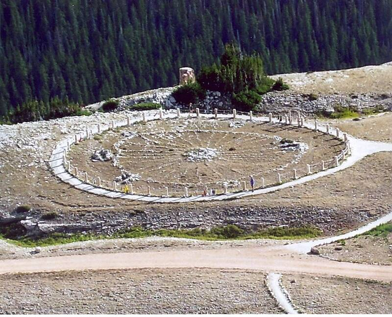

Bighorn Medicine Wheel
Bighorn Mountains, Wyoming, about 300 to 800 years old

A stone circle about 80 feet across with 28 spokes, sacred to many Plains tribes and still used for ceremonies. Some researchers argue its cairns align with the summer solstice sunrise and certain bright stars. A National Historic Landmark. 1
Open in the interactive Watcher